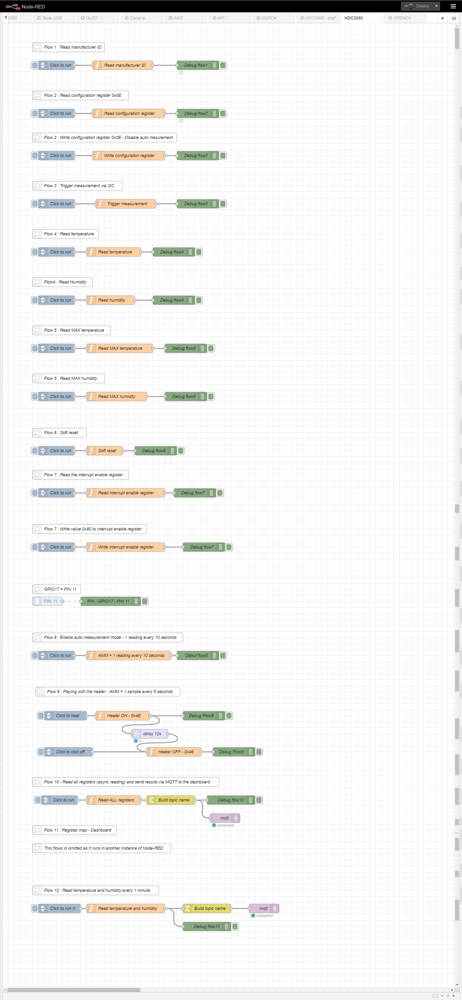

Putting it all together
We have developed several small flows that allows read and right to the registers of the HDC2080. These flows allows us to use most of the features available in this awesome digital sensor.
It is easy to use these flows as a starting point to build subflows that allow reading and writing to the device in a simpler way. This is however out of the scope of this tutorial.

All flows:
[{"id":"ae40d2da42dfdbb2","type":"tab","label":"HDC2080","disabled":false,"info":""},{"id":"e207ea6471f306f4","type":"inject","z":"ae40d2da42dfdbb2","name":"Click to run","props":[{"p":"payload"},{"p":"topic","vt":"str"}],"repeat":"","crontab":"","once":false,"onceDelay":0.1,"topic":"","payloadType":"date","x":180,"y":140,"wires":[["2ca8939ae6b0ac08"]]},{"id":"8f852f4ea6291a5e","type":"debug","z":"ae40d2da42dfdbb2","name":"Debug flow1","active":true,"tosidebar":true,"console":false,"tostatus":true,"complete":"payload","targetType":"msg","statusVal":"payload","statusType":"auto","x":650,"y":140,"wires":[]},{"id":"3676564ac6445fe1","type":"comment","z":"ae40d2da42dfdbb2","name":"Flow 1 : Read manufacturer ID","info":"","x":220,"y":80,"wires":[]},{"id":"2ca8939ae6b0ac08","type":"function","z":"ae40d2da42dfdbb2","name":"Read manufacturer ID","func":"const HDC2080_I2C = 0x40;\n\nconst hdc = i2c.openSync(1);\nlet r = hdc.readWordSync(HDC2080_I2C, 0xFC);\nhdc.closeSync();\n\nmsg.payload = `Manufacturer ID: 0x${r.toString(16)}`;\nreturn msg;","outputs":1,"noerr":0,"initialize":"","finalize":"","libs":[{"var":"i2c","module":"i2c-bus"}],"x":400,"y":140,"wires":[["8f852f4ea6291a5e"]]},{"id":"24d24b3f86e7d89a","type":"function","z":"ae40d2da42dfdbb2","name":"Read configuration register","func":"const HDC2080_I2C = 0x40;\n\nconst hdc = i2c.openSync(1);\nlet r1 = hdc.readByteSync(HDC2080_I2C, 0x0E);\nhdc.closeSync();\n\nmsg.payload = \"0x\" + r1.toString(16).padStart(2, '0');\nreturn msg;","outputs":1,"noerr":0,"initialize":"","finalize":"","libs":[{"var":"i2c","module":"i2c-bus"}],"x":420,"y":300,"wires":[["38ef03979f20bbe2"]]},{"id":"18e008a64c8ea4be","type":"inject","z":"ae40d2da42dfdbb2","name":"Click to run","props":[{"p":"payload"},{"p":"topic","vt":"str"}],"repeat":"","crontab":"","once":false,"onceDelay":0.1,"topic":"","payloadType":"date","x":180,"y":300,"wires":[["24d24b3f86e7d89a"]]},{"id":"e0fb19b67f1d56fd","type":"comment","z":"ae40d2da42dfdbb2","name":"Flow 2 : Read configuration register 0x0E","info":"","x":260,"y":240,"wires":[]},{"id":"38ef03979f20bbe2","type":"debug","z":"ae40d2da42dfdbb2","name":"Debug flow2","active":true,"tosidebar":true,"console":false,"tostatus":true,"complete":"payload","targetType":"msg","statusVal":"payload","statusType":"auto","x":650,"y":300,"wires":[]},{"id":"2fce20d60bba3448","type":"comment","z":"ae40d2da42dfdbb2","name":"Flow 2 : Write configuration register 0x0E","info":"","x":260,"y":380,"wires":[]},{"id":"3baa31a1db1fb78d","type":"inject","z":"ae40d2da42dfdbb2","name":"Click to run","props":[{"p":"payload"},{"p":"topic","vt":"str"}],"repeat":"","crontab":"","once":false,"onceDelay":0.1,"topic":"","payloadType":"date","x":180,"y":440,"wires":[["3be881cfad1c8e09"]]},{"id":"3be881cfad1c8e09","type":"function","z":"ae40d2da42dfdbb2","name":"Write configuration register","func":"const HDC2080_I2C = 0x40;\n\nconst hdc = i2c.openSync(1);\nhdc.writeByteSync(HDC2080_I2C, 0x0E, 0x06);\nhdc.closeSync();\n\nmsg.payload = \"0x06\";\nreturn msg;","outputs":1,"noerr":0,"initialize":"","finalize":"","libs":[{"var":"i2c","module":"i2c-bus"}],"x":420,"y":440,"wires":[["322d01ab7757eba2"]]},{"id":"322d01ab7757eba2","type":"debug","z":"ae40d2da42dfdbb2","name":"Debug flow2","active":true,"tosidebar":true,"console":false,"tostatus":false,"complete":"payload","targetType":"msg","statusVal":"","statusType":"auto","x":650,"y":440,"wires":[]},{"id":"45db449f2dcf4ce1","type":"comment","z":"ae40d2da42dfdbb2","name":"Flow 3 : Trigger measurement via I2C","info":"","x":250,"y":540,"wires":[]},{"id":"4635f68954c0b4f8","type":"inject","z":"ae40d2da42dfdbb2","name":"Click to run","props":[{"p":"payload"},{"p":"topic","vt":"str"}],"repeat":"","crontab":"","once":false,"onceDelay":0.1,"topic":"","payloadType":"date","x":180,"y":600,"wires":[["c6c3eb7076945329"]]},{"id":"c6c3eb7076945329","type":"function","z":"ae40d2da42dfdbb2","name":"Trigger measurement","func":"const HDC2080_I2C = 0x40;\n\nconst hdc = i2c.openSync(1);\nhdc.writeByteSync(HDC2080_I2C, 0x0F, 0x01);\nhdc.closeSync();\n\nmsg.payload = \"Measurement triggered\";\n\nreturn msg;","outputs":1,"noerr":0,"initialize":"","finalize":"","libs":[{"var":"i2c","module":"i2c-bus"}],"x":410,"y":600,"wires":[["133fd4465ffca89a"]]},{"id":"133fd4465ffca89a","type":"debug","z":"ae40d2da42dfdbb2","name":"Debug flow3","active":true,"tosidebar":true,"console":false,"tostatus":false,"complete":"payload","targetType":"msg","statusVal":"","statusType":"auto","x":650,"y":600,"wires":[]},{"id":"48d7c05adb4a40de","type":"comment","z":"ae40d2da42dfdbb2","name":"Flow 4 : Read temperature","info":"","x":210,"y":700,"wires":[]},{"id":"219d5a07b5b3d622","type":"inject","z":"ae40d2da42dfdbb2","name":"Click to run","props":[{"p":"payload"},{"p":"topic","vt":"str"}],"repeat":"","crontab":"","once":false,"onceDelay":0.1,"topic":"","payloadType":"date","x":180,"y":760,"wires":[["ab3d99f63335f7f8"]]},{"id":"ab3d99f63335f7f8","type":"function","z":"ae40d2da42dfdbb2","name":"Read temperature","func":"const HDC2080_I2C = 0x40;\n\nlet hdc = i2c.openSync(1);\nlet r = hdc.readWordSync(HDC2080_I2C, 0x00);\nhdc.closeSync();\n\nmsg.payload = (r / 65536) * 165 - 40.5;\n\nreturn msg;","outputs":1,"noerr":0,"initialize":"","finalize":"","libs":[{"var":"i2c","module":"i2c-bus"}],"x":370,"y":760,"wires":[["d3cf046c0705ecb6"]]},{"id":"d3cf046c0705ecb6","type":"debug","z":"ae40d2da42dfdbb2","name":"Debug flow4","active":true,"tosidebar":true,"console":false,"tostatus":false,"complete":"payload","targetType":"msg","statusVal":"","statusType":"auto","x":570,"y":760,"wires":[]},{"id":"3c8ea04b57908649","type":"inject","z":"ae40d2da42dfdbb2","name":"Click to run","props":[{"p":"payload"},{"p":"topic","vt":"str"}],"repeat":"","crontab":"","once":false,"onceDelay":0.1,"topic":"","payloadType":"date","x":180,"y":920,"wires":[["4875a12e866cb662"]]},{"id":"5e30deb66330b5d9","type":"comment","z":"ae40d2da42dfdbb2","name":"Flow4 : Read Humidity","info":"","x":200,"y":860,"wires":[]},{"id":"4875a12e866cb662","type":"function","z":"ae40d2da42dfdbb2","name":"Read humidity","func":"const HDC2080_I2C = 0x40;\n\nlet hdc = i2c.openSync(1);\nlet r = hdc.readWordSync(HDC2080_I2C, 0x02);\nhdc.closeSync();\n\nmsg.payload = r / 65536 * 100;\n\nreturn msg;","outputs":1,"noerr":0,"initialize":"","finalize":"","libs":[{"var":"i2c","module":"i2c-bus"}],"x":360,"y":920,"wires":[["1cec6607f73c9622"]]},{"id":"1cec6607f73c9622","type":"debug","z":"ae40d2da42dfdbb2","name":"Debug flow4","active":true,"tosidebar":true,"console":false,"tostatus":false,"complete":"payload","targetType":"msg","statusVal":"","statusType":"auto","x":570,"y":920,"wires":[]},{"id":"66512f3e1e0938dc","type":"comment","z":"ae40d2da42dfdbb2","name":"Flow 5 : Read MAX temperature","info":"","x":230,"y":1020,"wires":[]},{"id":"139778360202aca7","type":"inject","z":"ae40d2da42dfdbb2","name":"Click to run","props":[{"p":"payload"},{"p":"topic","vt":"str"}],"repeat":"","crontab":"","once":false,"onceDelay":0.1,"topic":"","payloadType":"date","x":180,"y":1080,"wires":[["e4bf6d56a2d1a00f"]]},{"id":"e4bf6d56a2d1a00f","type":"function","z":"ae40d2da42dfdbb2","name":"Read MAX temperature","func":"const HDC2080_I2C = 0x40;\n\nconst hdc = i2c.openSync(1);\nlet r1 = hdc.readByteSync(HDC2080_I2C, 0x05);\nhdc.closeSync();\n\nmsg.payload = (r1 / 256) * 165 - 40.5;\nreturn msg;","outputs":1,"noerr":0,"initialize":"","finalize":"","libs":[{"var":"i2c","module":"i2c-bus"}],"x":390,"y":1080,"wires":[["5f66699f757577b8"]]},{"id":"5f66699f757577b8","type":"debug","z":"ae40d2da42dfdbb2","name":"Debug flow5","active":true,"tosidebar":true,"console":false,"tostatus":false,"complete":"payload","targetType":"msg","statusVal":"","statusType":"auto","x":610,"y":1080,"wires":[]},{"id":"7acf3202ed2f34ac","type":"comment","z":"ae40d2da42dfdbb2","name":"Flow 5 : Read MAX humidity","info":"","x":220,"y":1180,"wires":[]},{"id":"cd2f739e240a486b","type":"inject","z":"ae40d2da42dfdbb2","name":"Click to run","props":[{"p":"payload"},{"p":"topic","vt":"str"}],"repeat":"","crontab":"","once":false,"onceDelay":0.1,"topic":"","payloadType":"date","x":180,"y":1240,"wires":[["9ab0e0e884823fc5"]]},{"id":"9ab0e0e884823fc5","type":"function","z":"ae40d2da42dfdbb2","name":"Read MAX humidity","func":"const HDC2080_I2C = 0x40;\n\nconst hdc = i2c.openSync(1);\nlet r1 = hdc.readByteSync(HDC2080_I2C, 0x06);\nhdc.closeSync();\n\nmsg.payload = (r1 / 256) * 100;\n\nreturn msg;","outputs":1,"noerr":0,"initialize":"","finalize":"","libs":[{"var":"i2c","module":"i2c-bus"}],"x":380,"y":1240,"wires":[["0f5aca8fc8b1f7a2"]]},{"id":"0f5aca8fc8b1f7a2","type":"debug","z":"ae40d2da42dfdbb2","name":"Debug flow5","active":true,"tosidebar":true,"console":false,"tostatus":false,"complete":"payload","targetType":"msg","statusVal":"","statusType":"auto","x":610,"y":1240,"wires":[]},{"id":"53fbefa876532be8","type":"comment","z":"ae40d2da42dfdbb2","name":"Flow 6 : Soft reset","info":"","x":190,"y":1360,"wires":[]},{"id":"aa6dd67bf670c943","type":"inject","z":"ae40d2da42dfdbb2","name":"Click to run","props":[{"p":"payload"},{"p":"topic","vt":"str"}],"repeat":"","crontab":"","once":false,"onceDelay":0.1,"topic":"","payloadType":"date","x":180,"y":1420,"wires":[["3a16126dc33f9eb1"]]},{"id":"3a16126dc33f9eb1","type":"function","z":"ae40d2da42dfdbb2","name":"Soft reset","func":"const HDC2080_I2C = 0x40;\n\nconst hdc = i2c.openSync(1);\nlet r1 = hdc.readByteSync(HDC2080_I2C, 0x0E);\nhdc.writeByteSync(HDC2080_I2C, 0x0E, 0x80);\nhdc.closeSync();\n\nconst hdc1 = i2c.openSync(1);\nhdc1.writeByteSync(HDC2080_I2C, 0x0E, r1);\nhdc1.closeSync();\n\nmsg.payload = \"0x\" + r1.toString(16).padStart(2, '0');\nreturn msg;","outputs":1,"noerr":0,"initialize":"","finalize":"","libs":[{"var":"i2c","module":"i2c-bus"}],"x":340,"y":1420,"wires":[["9e5323c9ae142a3e"]]},{"id":"9e5323c9ae142a3e","type":"debug","z":"ae40d2da42dfdbb2","name":"Debug flow6","active":true,"tosidebar":true,"console":false,"tostatus":false,"complete":"payload","targetType":"msg","statusVal":"","statusType":"auto","x":510,"y":1420,"wires":[]},{"id":"96b572ada0aa82ba","type":"comment","z":"ae40d2da42dfdbb2","name":"Flow 7 : Read the interrupt enable register","info":"","x":260,"y":1500,"wires":[]},{"id":"b1b6eaaeb69dd864","type":"inject","z":"ae40d2da42dfdbb2","name":"Click to run","props":[{"p":"payload"},{"p":"topic","vt":"str"}],"repeat":"","crontab":"","once":false,"onceDelay":0.1,"topic":"","payloadType":"date","x":180,"y":1560,"wires":[["afc545b7f11c3b0d"]]},{"id":"afc545b7f11c3b0d","type":"function","z":"ae40d2da42dfdbb2","name":"Read interrupt enable register","func":"const HDC2080_I2C = 0x40;\n\nconst hdc = i2c.openSync(1);\nlet r1 = hdc.readByteSync(HDC2080_I2C, 0x07);\nhdc.closeSync();\n\nmsg.payload = \"0x\" + r1.toString(16).padStart(2, '0');\nreturn msg;","outputs":1,"noerr":0,"initialize":"","finalize":"","libs":[{"var":"i2c","module":"i2c-bus"}],"x":410,"y":1560,"wires":[["6ed64a45ebcf5635"]]},{"id":"6ed64a45ebcf5635","type":"debug","z":"ae40d2da42dfdbb2","name":"Debug flow7","active":true,"tosidebar":true,"console":false,"tostatus":false,"complete":"payload","targetType":"msg","statusVal":"","statusType":"auto","x":640,"y":1560,"wires":[]},{"id":"5b6c3e16bba31549","type":"inject","z":"ae40d2da42dfdbb2","name":"Click to run","props":[{"p":"payload"},{"p":"topic","vt":"str"}],"repeat":"","crontab":"","once":false,"onceDelay":0.1,"topic":"","payloadType":"date","x":180,"y":1740,"wires":[["cc0c715c69b9385f"]]},{"id":"773cc86a0a24624a","type":"comment","z":"ae40d2da42dfdbb2","name":"Flow 7 : Write value 0x80 to interrupt enable register","info":"","x":290,"y":1680,"wires":[]},{"id":"cc0c715c69b9385f","type":"function","z":"ae40d2da42dfdbb2","name":"Write interrupt enable register","func":"const HDC2080_I2C = 0x40;\n\nconst hdc = i2c.openSync(1);\nhdc.writeByteSync(HDC2080_I2C, 0x07, 0x80);\nhdc.closeSync();\n\nmsg.payload = \"0x80\";\nreturn msg;","outputs":1,"noerr":0,"initialize":"","finalize":"","libs":[{"var":"i2c","module":"i2c-bus"}],"x":410,"y":1740,"wires":[["9b9077d8f2270c52"]]},{"id":"9b9077d8f2270c52","type":"debug","z":"ae40d2da42dfdbb2","name":"Debug flow7","active":true,"tosidebar":true,"console":false,"tostatus":false,"complete":"payload","targetType":"msg","statusVal":"","statusType":"auto","x":650,"y":1740,"wires":[]},{"id":"1ad9ad6943e71d10","type":"rpi-gpio in","z":"ae40d2da42dfdbb2","name":"","pin":"11","intype":"tri","debounce":"0","read":false,"x":150,"y":1920,"wires":[["54ed70b77d532554"]]},{"id":"54ed70b77d532554","type":"debug","z":"ae40d2da42dfdbb2","name":"PIN - GPIO17 - PIN 11 ","active":true,"tosidebar":true,"console":false,"tostatus":false,"complete":"payload","targetType":"msg","statusVal":"","statusType":"auto","x":360,"y":1920,"wires":[]},{"id":"8905e7dc3b52d696","type":"comment","z":"ae40d2da42dfdbb2","name":"GPIO17 = PIN 11","info":"","x":180,"y":1880,"wires":[]},{"id":"fced05ac8073f868","type":"comment","z":"ae40d2da42dfdbb2","name":"Flow 8 : 1 reading every 10 seconds","info":"","x":240,"y":2040,"wires":[]},{"id":"5c8a65ea991b187c","type":"inject","z":"ae40d2da42dfdbb2","name":"Click to run","props":[{"p":"payload"},{"p":"topic","vt":"str"}],"repeat":"","crontab":"","once":false,"onceDelay":0.1,"topic":"","payloadType":"date","x":180,"y":2100,"wires":[["b01133b39caa746c"]]},{"id":"b01133b39caa746c","type":"function","z":"ae40d2da42dfdbb2","name":"1 reading every 10 seconds","func":"const HDC2080_I2C = 0x40;\n\nconst hdc = i2c.openSync(1);\nhdc.writeByteSync(HDC2080_I2C, 0x0E, 0x36);\nhdc.closeSync();\n\nmsg.payload = \"0x36\";\nreturn msg;","outputs":1,"noerr":0,"initialize":"","finalize":"","libs":[{"var":"i2c","module":"i2c-bus"}],"x":400,"y":2100,"wires":[["020cd089a072125c"]]},{"id":"020cd089a072125c","type":"debug","z":"ae40d2da42dfdbb2","name":"Debuf flow8","active":true,"tosidebar":true,"console":false,"tostatus":false,"complete":"payload","targetType":"msg","statusVal":"","statusType":"auto","x":630,"y":2100,"wires":[]},{"id":"ce2acd20c5ad696e","type":"comment","z":"ae40d2da42dfdbb2","name":"Flow 9 : Playing with the heater - 1 sample every 5 seconds","info":"","x":320,"y":2220,"wires":[]},{"id":"e3b67be803fb22e1","type":"inject","z":"ae40d2da42dfdbb2","name":"Click to heat","props":[{"p":"payload"},{"p":"topic","vt":"str"}],"repeat":"","crontab":"","once":false,"onceDelay":0.1,"topic":"","payloadType":"date","x":210,"y":2300,"wires":[["fc763414380a8a97"]]},{"id":"fc763414380a8a97","type":"function","z":"ae40d2da42dfdbb2","name":"Heater ON - 0x4E","func":"const HDC2080_I2C = 0x40;\n\nconst hdc = i2c.openSync(1);\nhdc.writeByteSync(HDC2080_I2C, 0x0E, 0x4E);\nhdc.closeSync();\n\nmsg.payload = \"The heater is ON - Check temperature register\";\nreturn msg;","outputs":1,"noerr":0,"initialize":"","finalize":"","libs":[{"var":"i2c","module":"i2c-bus"}],"x":400,"y":2300,"wires":[["069f453717167d28","36d0ce4a604bab1c"]]},{"id":"538a3ccd51affbb3","type":"function","z":"ae40d2da42dfdbb2","name":"Heater OFF - 0x46","func":"const HDC2080_I2C = 0x40;\n\nconst hdc = i2c.openSync(1);\nhdc.writeByteSync(HDC2080_I2C, 0x0E, 0x46);\nhdc.closeSync();\n\nmsg.payload = \"The heater is OFF\";\nreturn msg;","outputs":1,"noerr":0,"initialize":"","finalize":"","libs":[{"var":"i2c","module":"i2c-bus"}],"x":570,"y":2420,"wires":[["8b003c2060dbda78"]]},{"id":"6e7c00ad4c07de04","type":"inject","z":"ae40d2da42dfdbb2","name":"Click to cool off","props":[{"p":"payload"},{"p":"topic","vt":"str"}],"repeat":"","crontab":"","once":false,"onceDelay":0.1,"topic":"","payloadType":"date","x":220,"y":2420,"wires":[["538a3ccd51affbb3"]]},{"id":"069f453717167d28","type":"debug","z":"ae40d2da42dfdbb2","name":"Debug Flow9","active":true,"tosidebar":true,"console":false,"tostatus":false,"complete":"payload","targetType":"msg","statusVal":"","statusType":"auto","x":670,"y":2300,"wires":[]},{"id":"8b003c2060dbda78","type":"debug","z":"ae40d2da42dfdbb2","name":"Debug Flow9","active":true,"tosidebar":true,"console":false,"tostatus":false,"complete":"payload","targetType":"msg","statusVal":"","statusType":"auto","x":770,"y":2420,"wires":[]},{"id":"36d0ce4a604bab1c","type":"delay","z":"ae40d2da42dfdbb2","name":"","pauseType":"delay","timeout":"12","timeoutUnits":"seconds","rate":"1","nbRateUnits":"1","rateUnits":"second","randomFirst":"1","randomLast":"5","randomUnits":"seconds","drop":false,"allowrate":false,"x":490,"y":2360,"wires":[["538a3ccd51affbb3"]]}]